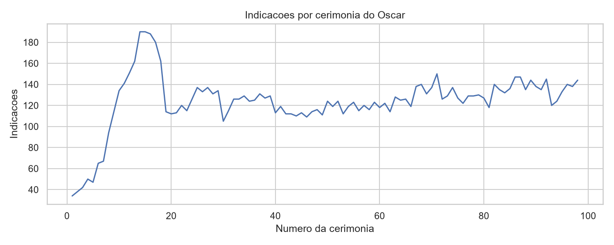
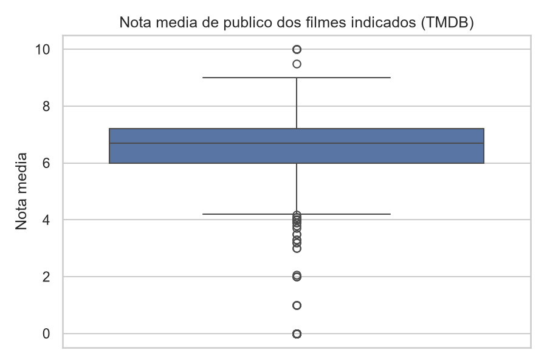
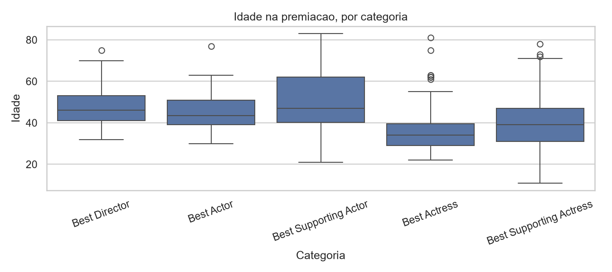

Meta 1Preditiva
TAA
Ampliar a capacidade de antecipação do vencedor de Melhor Filme
Taxa de Acerto na Antecipação · cerimônias de 1950 a 2020
Tópicos Avançados em Banco de Dados · Bacharelado em Sistemas de Informação
Maceió · 2026
Uma análise histórica baseada em Data Warehouse
Instituto Federal de AlagoascampusMaceióapresenta um projeto de
Eduardo Pereira Calado·Isaque de Souza Braga·Renilson José da Silva Santos
disciplinaTópicos Avançados em Banco de DadosprofessorLuiz Frederico Lopes de Oliveira
Objetivo do trabalho
Construir um Data Warehouse com o histórico do Oscar para descobrir o que está associado à vitória e como o perfil dos premiados mudou ao longo do tempo.
Como chegamos lá
Metas SMART
A Meta 1 mede a capacidade do próprio projeto de antecipar o vencedor. Nas Metas 2 e 3, o DW é instrumento de mensuração e monitoramento.
TAA
Taxa de Acerto na Antecipação · cerimônias de 1950 a 2020
PGND
Participação de Gêneros Não Dramáticos · 1950 a 2024
PVNB
Participação de Vencedores Não Brancos · 1950 a 2014
Prazo das três metas: encerramento do semestre letivo 2026.2.
Meta 1 · Preditiva
Elevar em pelo menos 10 pontos percentuais a Taxa de Acerto na Antecipação do vencedor de Melhor Filme, tendo como linha de base a regra simples do maior número de indicações por filme, nas cerimônias de 1950 a 2020.
Meta 2 · Descritiva
Medir a Participação de Gêneros Não Dramáticos entre os vencedores de Melhor Filme, por década, de 1950 a 2024, e a amplitude entre a década de menor e a de maior participação.
Meta 3 · Descritiva
Medir a Participação de Vencedores Não Brancos nas categorias de Melhor Ator, Melhor Atriz e Melhor Direção, apurada sobre o período total de 1950 a 2014.
Métricas principais
TAA
Taxa de Acerto na Antecipação
Meta 1 · Melhor Filme · 1950–2020
Em quantas cerimônias, de cada 100, conseguimos apontar o vencedor de Melhor Filme antes do anúncio.
FAT_INDICACAO_OSCAR
.QTD_INDICACOES_FILMEnº de indicações do filme na cerimônia — a regra simples acerta 51,9%PGND
Participação de Gêneros Não Dramáticos
Meta 2 · Melhor Filme · por década
Quantos vencedores de Melhor Filme não são dramas — e como essa fatia muda de uma década para outra.
DIM_FILME
.STA_GENERO_DRAMATICO1 quando o gênero principal do filme (TMDB) é DramaPVNB
Participação de Vencedores Não Brancos
Meta 3 · Ator, Atriz, Direção · 1950–2014
De cada 100 vencedores de atuação e direção, quantos são profissionais não brancos.
DIM_PESSOA
.STA_ETNIA_NAO_BRANCA1 quando a classificação é distinta de White — hoje, 4,8%Bases de dados · Kaggle
Nenhuma base cobre sozinha indicações e desfechos, atributos das obras e atributos dos profissionais — daí a integração.
Faixas de anos conforme os dicionários: Year (The Oscar Award), year (Film Awards), year_ceremony (TMDB Metadata), year_of_award (Demographics).
Base 1 de 4
Registro oficial da Academia: cada linha é uma indicação. É a base central e traz a variável resposta, se a indicação venceu ou não.
11 de 14
colunas usadas no projeto
Colunas usadas
Ceremonynº da cerimôniaYearano dos filmesClassgrupo da categoriaCanonicalCategorycategoria padronizadaCategorynome oficial da categoriaFilmtítulo do filmeFilmIdID IMDb do filmeNomineesnomes dos indicadosNomineeIdsIDs IMDb dos indicadosWinnervenceu ou nãoDetailpersonagem, canção etc.Raphael Fontes (2026) · kaggle.com/datasets/unanimad/the-oscar-award · arquivo full_data.csv
Base 2 de 4
Todas as premiações catalogadas pelo IMDb, inclusive de TV. Serve para medir como os filmes foram nas premiações que acontecem antes do Oscar.
9 de 21
colunas usadas no projeto
Colunas usadas
eventIdID do eventoeventNamenome do eventoyearano do eventocategoryNamecategorianamenome do indicadoconstID IMDb do indicadoisWinnervenceu ou nãoisPersonindicado é uma pessoaisTitleindicado é uma obraABab (2026) · kaggle.com/datasets/iwooloowi/film-awards-imdb
Base 3 de 4
Atributos de cada filme indicado: gênero, idioma original e recepção do público.
11 de 19
colunas usadas no projeto
Colunas usadas
filmtítulo do filmeyear_filmano do filmedecade_filmdécada do filmeyear_ceremonyano da cerimôniaid_tmdbID no TMDBgenresgêneros do filmeoriginal_languageidioma originalrelease_datedata de lançamentovote_averagenota do públicovote_countnº de votospopularitypopularidadeVinícius (2026) · kaggle.com/datasets/viniciusno/oscar-nominees-and-winners-with-tmdb-metadata
Base 4 de 4
Perfil dos vencedores de atuação e direção até 2014, classificado de forma colaborativa (CrowdFlower).
15 de 27
colunas usadas no projeto
Colunas usadas
personnome do profissionalmoviefilme premiadoawardcategoriayear_of_awardano da premiaçãodate_of_birthdata de nascimentobirthplacelocal de nascimentorace_ethnicityclassificação étnico-racialbiourlfonte biográfica_trusted_judgmentsnº de julgamentos…:confidence6 colunas · concordância por atributoFelix Mejia (2026) · kaggle.com/datasets/fmejia21/demographics-of-academy-awards-oscars-winners
Perguntas de negócio · 1 a 7
| 1 | Quais os dez filmes com maior número de indicações em uma mesma cerimônia? | 1950–2025 |
| 2 | Em que proporção das cerimônias o filme com maior número de indicações venceu Melhor Filme? | 1950–2025 |
| 3 | Como evolui, por década, a taxa de acerto do critério do maior número de indicações na antecipação do vencedor de Melhor Filme? | |
| 4 | Qual a proporção de vencedores de Melhor Filme de gêneros não dramáticos, por década? | desde 1950 |
| 5 | Qual a proporção de vencedores de Melhor Ator, Melhor Atriz e Melhor Direção classificados como não brancos, por década? | 1950–2014 |
| 6 | Qual a taxa de coincidência entre a vitória em precursoras (Globo de Ouro, BAFTA, SAG, DGA e PGA) e a vitória no Oscar, na mesma categoria canônica e no mesmo ano? | 1950–2020 |
| 7 | Qual a idade média dos vencedores de Melhor Ator, Melhor Atriz e Melhor Direção, por categoria e por década? | 1950–2014 |
Perguntas de negócio · 8 a 14
| 8 | Qual a proporção de vencedores nascidos fora dos Estados Unidos nas categorias de atuação e direção, por categoria e por década? | 1950–2014 |
| 9 | Como evoluiu a participação feminina entre os indicados a Melhor Direção ao longo das décadas? | 1950–2025 |
| 10 | Qual a proporção de produções em idioma não inglês entre indicados e vencedores de Melhor Filme, por década? | desde 1950 |
| 11 | Os vencedores de Melhor Filme têm nota média de público superior à dos demais indicados da mesma cerimônia? | |
| 12 | Qual a taxa de conversão de indicações em vitórias por filme e por profissional, e como ela se relaciona com as indicações acumuladas anteriormente? | |
| 13 | Como evoluíram o idioma original e a nota média de público dos vencedores de Melhor Filme de Animação desde a criação da categoria? | desde 2002 |
| 14 | Quais fatores, combinados, têm maior poder preditivo sobre a vitória em Melhor Filme, e qual a acurácia do modelo frente ao critério do maior número de indicações? |
Análise exploratória · carga
Primeiro passo: carregar cada base e medir tamanho, repetição e completude. Esses três números já mostram onde vai estar o trabalho de tratamento.
| Base | Registros | Colunas | Duplicados | Células nulas | O que isso significa |
|---|---|---|---|---|---|
| The Oscar Award | 12.137 | 14 | 0 | 26,50% | Base central, uma linha por indicação. Os nulos se concentram em textos complementares (Note, Citation) e no Winner, que fica vazio quando a indicação não venceu. |
| Film Awards (IMDb) | 2.158.525 | 21 | 21.857 | 31,29% | 178 vezes maior que a base do Oscar, porque inclui TV, música e festivais. Única com linhas repetidas: exige filtro e deduplicação. |
| TMDB Metadata | 5.199 | 19 | 0 | 5,73% | A mais completa. Praticamente uma linha por filme indicado, com gênero, idioma e nota do público. |
| Demographics | 441 | 27 | 0 | 22,07% | A menor: só vencedores de atuação e direção. Os nulos vêm quase todos de colunas de controle da plataforma de classificação. |
Como ler
Duplicados: linhas idênticas a outra. Células nulas: % de células vazias em toda a base (linhas × colunas).
Ferramentas
Python com Pandas para manipular e tratar; Matplotlib e Seaborn para os gráficos.
Importante
Cada achado a seguir vira uma decisão de tratamento, executada no ETL antes da carga do DW.
Resumo de integridade · saída de analise_exploratoria.py
Análise exploratória · The Oscar Award
3.515 verdadeiros, 8.622 nulos e nenhum falso. Sem a conversão, qualquer taxa de conversão calculada daria artificialmente 100%.
28,96%
False · 0 registros
71,04%
Tratamento no script
No DW: FAT_INDICACAO_OSCAR.STA_VENCEDOR · NOT NULL · CHECK (0, 1) · padrão 0
Análise exploratória · The Oscar Award

Média e mediana próximas: distribuição aproximadamente simétrica, com dispersão moderada.
Análise exploratória · Film Awards (IMDb)
Para a Meta 1 só interessam as premiações de cinema que acontecem antes do Oscar, e elas são uma fração pequena desta base.
Registros · mesma escala · redução de 97,03%
1Por que filtrar
A base é dominada por TV: o próprio Oscar é só o 5º evento mais frequente. Sem filtro, o desempenho nas precursoras se mistura a prêmios de TV.
2Como filtrar
Mantemos só os eventos de cinema que antecedem o Oscar e o período 1950–2020.
O filtro olha o evento e o nome do prêmio (eventName + awardName), porque nomes como “Audience Award” e “Jury Award” se repetem em vários festivais e cerimônias — cerca de 38 mil registros cada.
3O que sobra
Sete eventos. O próprio Oscar fica na base para validação cruzada com a primeira base.
Também saem 7 colunas que só servem a TV e música (83% a 99,5% vazias) e 5.017 linhas sem indicado identificado.
Análise exploratória · TMDB Metadata

| vote_average | vote_count | popularity | oscars_won | |
|---|---|---|---|---|
| Média | 6,38 | 1.385,77 | 2,19 | 0,42 |
| Mediana | 6,70 | 69 | 2,40 | 0 |
| 3º quartil | 7,20 | 700 | 3,54 | 1 |
| Máximo | 10,00 | 37.163 | 58,12 | 11 |
| Contagem | 4.877 | 4.877 | 4.877 | 5.199 |
vote_average: média levemente abaixo da mediana — poucos filmes muito mal avaliados.
vote_count: média ≫ mediana, assimetria positiva forte. A mediana é a medida mais representativa.
oscars_won: máximo de 11 é compatível com recordes como Ben-Hur, Titanic e O Retorno do Rei.
Análise exploratória · Demographics
race_ethnicity · 441 registros · Tabela 21
Células quase vazias
As demais categorias somam 6,80%. Por isso a análise usa uma variável binária agrupada, não branco × branco: STA_ETNIA_NAO_BRANCA.
Grau de confiança
Em race_ethnicity: média 0,999, mediana 1,000, mínimo 0,657. Apenas 1 registro abaixo do limiar de 0,90 (STA_CONFIANCA_BAIXA).
Colunas _gold
97,51% a 99,55% ausentes: controle interno do CrowdFlower, não atributos do profissional. Descarte.
Análise exploratória · Demographics
Datas em dois formatos — 30-Sep-1895 e 11-Oct-18 — e algumas com marca de nota de rodapé.
STA_DATA_CORRIGIDA)
Análise exploratória · viabilidade de integração
A base do Oscar é o centro e se liga às outras três por uma chave. Só uma ligação usa código em comum; as outras duas dependem de texto.
Base central
Chave de ligação
Base ligada
O que traz → onde fica no DW
The Oscar AwardFilmId · NomineeIds
Film Awards (IMDb)const
Vitórias nas premiações precursorasFAT_INDICACAO_PRECURSORA
The Oscar AwardFilm · Year
id_tmdbtexto normalizadoTMDB Metadatafilm · year_film
Gênero, idioma original, nota e votos do públicoDIM_FILME
The Oscar AwardNominees · ano
Demographicsperson · year_of_award
Nascimento, local de nascimento e classificação étnico-racialDIM_PESSOA
Por que normalizar o texto
“The Godfather” e “Godfather, The” são o mesmo filme. Antes de comparar, títulos e nomes vão para caixa baixa, perdem acentos e pontuação e têm os artigos iniciais padronizados.
E quando não encontra par
Os registros sem correspondência são contados e relatados, não descartados em silêncio. Na fato, a indicação é ligada à linha “não aplicável” da dimensão, e a contagem de indicações continua correta.
Modelagem do Data Warehouse
Esquema em constelação: extensão direta do Star Schema. Cada fato se liga às dimensões em estrela, sem normalizá-las em níveis (o que seria Snowflake).
Modelo lógico · Oracle SQL Data Modeler
Figura 1 · elaborado pelos autores (2026)
Modelagem · projeto físico · dw_oscar.sql
| TBS_DW_OSCAR_DADOS | 200 MB · +50 MB até 4 GB |
| TBS_DW_OSCAR_INDICES | 100 MB · +25 MB até 2 GB |
O Oracle não cria índice sobre FK automaticamente: todas as FKs das fatos são indexadas, além de filtros frequentes como NUM_CERIMONIA e STA_VENCEDOR.
Padrão de nomenclatura da disciplina
| Objeto | Padrão | Exemplo |
|---|---|---|
| Chave primária | PK_{tabela} | PK_DIM_FILME |
| Chave estrangeira | FK_{pai}_{filha} | FK_TMP_FIO |
| Verificação | CK_{tab}_{col} | CK_FIO_STAVCD |
| Não nulo | NN_{tab}_{col} | NN_FIO_TEMPO |
| Índice | IDX_{tab}_{col}_{nº} | IDX_FIO_CERIM_05 |
| Chave substituta | COD_{tab} | COD_FILME |
Dicionário de dados do DW · fatos
FAT_INDICACAO_OSCAR FIO
Grão: uma indicação, em uma categoria, em uma cerimônia.
| PKID_INDICACAO | identificador da indicação |
| FKCOD_TEMPO | ano da cerimônia |
| FKCOD_CATEGORIA | categoria |
| FKCOD_FILME | filme indicado |
| FKCOD_PESSOA | profissional · nula se o prêmio é da obra |
| NUM_CERIMONIA | nº da cerimônia |
| STA_VENCEDOR | 1 venceu · 0 não venceu |
| QTD_INDICACAO | sempre 1, para contagem |
| QTD_INDICACOES_FILME | indicações do filme na cerimônia · Meta 1 |
| QTD_INDICACOES_CERIMONIA | total de indicações da cerimônia |
| QTD_INDICACOES_ANTERIORES | indicações anteriores do profissional |
| DES_DETALHE | personagem, canção etc. |
FAT_INDICACAO_PRECURSORA FIP
Grão: uma indicação, em uma categoria, em um evento e ano.
| PKID_INDICACAO_PRECURSORA | identificador da indicação |
| FKCOD_TEMPO | ano do evento |
| FKCOD_EVENTO | evento (BAFTA, SAG…) |
| FKCOD_CATEGORIA | categoria equivalente no Oscar |
| FKCOD_FILME | filme · −1 se o prêmio é de pessoa |
| FKCOD_PESSOA | profissional · −1 se o prêmio é de obra |
| STA_VENCEDOR | 1 venceu · 0 não venceu |
| QTD_INDICACAO | sempre 1, para contagem |
| STA_INDICADO_OBRA | indicado é uma obra |
| STA_INDICADO_PESSOA | indicado é uma pessoa |
Dicionário de dados do DW · dimensões conformadas
DIM_FILME FLM
Registro da Academia + metadados do TMDB.
| PKCOD_FILME | chave substituta · −1 = não aplicável |
| COD_FILME_IMDB | ID no IMDb |
| COD_FILME_TMDB | ID no TMDB |
| NOM_TITULO | título |
| NUM_ANO_FILME | ano do filme |
| NUM_DECADA_FILME | década do filme |
| COD_IDIOMA_ORIGINAL | idioma original |
| STA_IDIOMA_INGLES | 1 se o idioma é inglês |
| DES_GENERO_PRINCIPAL | 1º gênero listado no TMDB |
| STA_GENERO_DRAMATICO | 1 se Drama · base da PGND |
| DTA_LANCAMENTO | data de lançamento |
| VAL_NOTA_MEDIA_TMDB | nota do público, 0 a 10 |
| QTD_VOTOS_TMDB | nº de votos |
| VAL_POPULARIDADE_TMDB | popularidade |
DIM_PESSOA PSS
Registro da Academia + atributos da Demographics.
| PKCOD_PESSOA | chave substituta · −1 = não aplicável |
| COD_PESSOA_IMDB | ID no IMDb |
| NOM_PESSOA | nome |
| DTA_NASCIMENTO | nascimento, com século corrigido |
| STA_DATA_CORRIGIDA | 1 se a data foi corrigida |
| DES_LOCAL_NASCIMENTO | local de nascimento |
| STA_NASCIDO_EXTERIOR | 1 se nasceu fora dos EUA |
| DES_ETNIA_RACIAL | classificação étnico-racial |
| STA_ETNIA_NAO_BRANCA | 1 se não White · base da PVNB |
| VAL_CONFIANCA_ETNIA | confiança da classificação |
| STA_CONFIANCA_BAIXA | 1 se a confiança é menor que 0,90 |
| COD_GENERO_PROFISSIONAL | F, M ou N (inconclusivo) |
| DES_FONTE_GENERO | fonte da informação de gênero |
Dicionário de dados do DW · demais dimensões
DIM_TEMPO TMP
Conformada · grão de ano.
| PKCOD_TEMPO | chave substituta |
| NUM_ANO | ano |
| NUM_DECADA | década |
| DES_PERIODO | rótulo da década |
DIM_CATEGORIA CAT
Conformada · une Oscar e precursoras.
| PKCOD_CATEGORIA | chave substituta |
| DES_CATEGORIA_CANONICA | nome padronizado |
| DES_CATEGORIA_ORIGINAL | nome na origem |
| DES_GRUPO_CATEGORIA | grupo (Class) |
| STA_CATEGORIA_ESCOPO | 1 se no escopo |
DIM_EVENTO_PREMIACAO EVT
Só da fato precursora.
| PKCOD_EVENTO | chave substituta |
| COD_EVENTO_IMDB | ID no IMDb |
| NOM_EVENTO | nome do evento |
| STA_PRECURSOR | 0 para o próprio Oscar |
Toda dimensão tem uma linha −1 “não aplicável”, para que nenhuma indicação fique sem par nas fatos.
Encerramento
Obrigado.
Eduardo Pereira Calado
Isaque de Souza Braga
Renilson José da Silva Santos
Referências